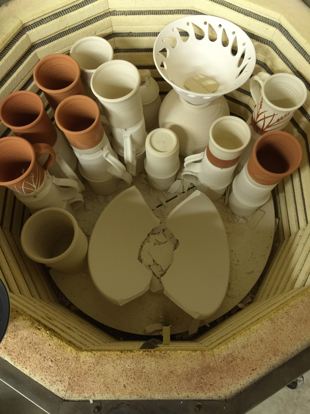
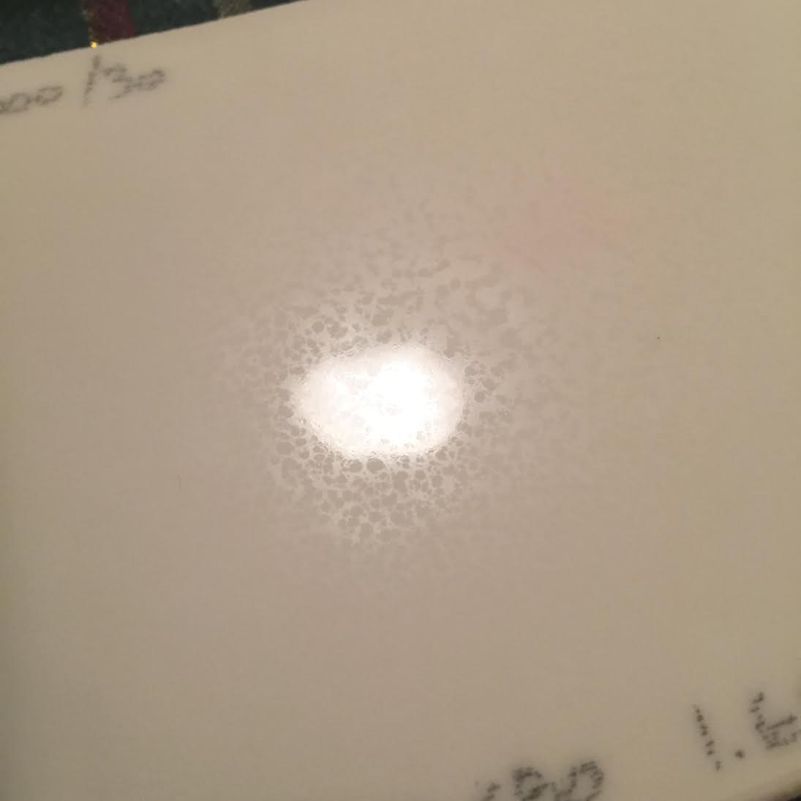

A Low Cost Tester of Glaze Melt Fluidity
A One-speed Lab or Studio Slurry Mixer
A Textbook Cone 6 Matte Glaze With Problems
Adjusting Glaze Expansion by Calculation to Solve Shivering
Alberta Slip, 20 Years of Substitution for Albany Slip
An Overview of Ceramic Stains
Are You in Control of Your Production Process?
Are Your Glazes Food Safe or are They Leachable?
Attack on Glass: Corrosion Attack Mechanisms
Ball Milling Glazes, Bodies, Engobes
Binders for Ceramic Bodies
Bringing Out the Big Guns in Craze Control: MgO (G1215U)
Can We Help You Fix a Specific Problem?
Ceramic Glazes Today
Ceramic Material Nomenclature
Ceramic Tile Clay Body Formulation
Changing Our View of Glazes
Chemistry vs. Matrix Blending to Create Glazes from Native Materials
Concentrate on One Good Glaze
Copper Red Glazes
Crazing and Bacteria: Is There a Hazard?
Crazing in Stoneware Glazes: Treating the Causes, Not the Symptoms
Creating a Non-Glaze Ceramic Slip or Engobe
Creating Your Own Budget Glaze
Crystal Glazes: Understanding the Process and Materials
Deflocculants: A Detailed Overview
Demonstrating Glaze Fit Issues to Students
Diagnosing a Casting Problem at a Sanitaryware Plant
Drying Ceramics Without Cracks
Duplicating Albany Slip
Duplicating AP Green Fireclay
Electric Hobby Kilns: What You Need to Know
Fighting the Glaze Dragon
Firing Clay Test Bars
First You See It Then You Don't: Raku Glaze Stability
Fixing a glaze that does not stay in suspension
Formulating a body using clays native to your area
Formulating a Clear Glaze Compatible with Chrome-Tin Stains
Formulating a Porcelain
Formulating Ash and Native-Material Glazes
G1214M Cone 5-7 20x5 glossy transparent glaze
G1214W Cone 6 transparent glaze
G1214Z Cone 6 matte glaze
G1916M Cone 06-04 transparent glaze
Getting the Glaze Color You Want: Working With Stains
Glaze and Body Pigments and Stains in the Ceramic Tile Industry
Glaze Chemistry Basics - Formula, Analysis, Mole%, Unity
Glaze chemistry using a frit of approximate analysis
Glaze Recipes: Formulate and Make Your Own Instead
Glaze Types, Formulation and Application in the Tile Industry
Having Your Glaze Tested for Toxic Metal Release
High Gloss Glazes
Hire Us for a 3D Printing Project
How a Material Chemical Analysis is Done
How desktop INSIGHT Deals With Unity, LOI and Formula Weight
How to Find and Test Your Own Native Clays
I have always done it this way!
Inkjet Decoration of Ceramic Tiles
Is Your Fired Ware Safe?
Leaching Cone 6 Glaze Case Study
Limit Formulas and Target Formulas
Low Budget Testing of Ceramic Glazes
Make Your Own Ball Mill Stand
Making Glaze Testing Cones
Monoporosa or Single Fired Wall Tiles
Organic Matter in Clays: Detailed Overview
Outdoor Weather Resistant Ceramics
Painting Glazes Rather Than Dipping or Spraying
Particle Size Distribution of Ceramic Powders
Porcelain Tile, Vitrified Tile
Rationalizing Conflicting Opinions About Plasticity
Ravenscrag Slip is Born
Recylcing Scrap Clay
Reducing the Firing Temperature of a Glaze From Cone 10 to 6
Setting up a Clay Testing Program in Your Company or Studio
Simple Physical Testing of Clays
Single Fire Glazing
Soluble Salts in Minerals: Detailed Overview
Some Keys to Dealing With Firing Cracks
Stoneware Casting Body Recipes
Substituting Cornwall Stone
Super-Refined Terra Sigillata
The Chemistry, Physics and Manufacturing of Glaze Frits
The Effect of Glaze Fit on Fired Ware Strength
The Four Levels on Which to View Ceramic Glazes
The Majolica Earthenware Process
The Potter's Prayer
The Right Chemistry for a Cone 6 Magnesia Matte
The Trials of Being the Only Technical Person in the Club
The Whining Stops Here: A Realistic Look at Clay Bodies
Those Unlabelled Bags and Buckets
Tiles and Mosaics for Potters
Toxicity of Firebricks Used in Ovens
Trafficking in Glaze Recipes
Understanding Ceramic Materials
Understanding Ceramic Oxides
Understanding Glaze Slurry Properties
Understanding the Deflocculation Process in Slip Casting
Understanding the Terra Cotta Slip Casting Recipes In North America
Understanding Thermal Expansion in Ceramic Glazes
Unwanted Crystallization in a Cone 6 Glaze
Using Dextrin, Glycerine and CMC Gum together
Volcanic Ash
What Determines a Glaze's Firing Temperature?
What is a Mole, Checking Out the Mole
What is the Glaze Dragon?
Where do I start in understanding glazes?
Why Textbook Glazes Are So Difficult
Working with children
Firing: What Happens to Ceramic Ware in a Firing Kiln
Description
Understanding more about changes taking place in the ware at each stage of a firing helps tune the curve and atmosphere to produce better ware
Article
Firing ware in an electronically controlled kiln is not like heating Chinese noodles in a microwave! It is more like baking an angel food cake. It requires awareness of kiln contents, the process, and the objective. The one-schedule-that-fits-all is out; flexibility and sensitivity are in.
As a potter or industry, you are basically making rocks in your kiln; metamorphic rocks. You are changing the form of matter just the way a metamorphic rock has been changed from another by the forces of heat and pressure. At the same time, you are melting glass (the glazes). While the requirements of the glazes are often the big focus in how firings are done, we cannot forget that the kiln contains bodies and glazes. There are physical and chemical things that happen in both during firing. The physical changes can give us headaches, but the magic of the chemistry makes it all worthwhile.
The Stages of a Firing
Final Drying
The ware has to dry in preparation for bisque (potters do this) or single fire (common in industry). If you don't have a dedicated drier, then you are using your kiln as a drier. If your drier does not exceed the boiling point of water, then you are using your kiln as a drier. If your ware sits in the studio or plant after drying, then its hydroscopic nature results in the absorption of water from the air and once again, your kiln is the final drier. Whatever the case, all water has to come out and even though a piece looks and feels like it is dry, there can still be plenty of water present. If just 2 or 3 percent needs removal, a typical industrial periodic kiln setting could have hundreds of pounds of water that must escape, all of which expands a thousand times when it turns to steam. Needless to say, this makes for a damp atmosphere during this stage and proper ventilation is a must. Many modern driers (and kilns) have fans that impose a virtual hurricane of draft on the ware in the kiln to remove this water efficiently.
Conceptually, fine-grained bodies (containing significant bentonite or ball clay) dry slower (some a lot slower). So extra time is required to vent the moisture out during firing, especially if ware is thick. Fire too fast at this early stage and the water within boils, generates steam and just blows the piece apart. Heat just a little slower and only a few chunks will be blown off at sites of thicker cross section. A little slower yet and maybe just a few cracks. Slower yet and you have it right. Slower yet and you have some margin for getting it right on a continual basis. That is what potters do. Remember, we are talking "conceptually". In actual fact, ware can often be fired much faster than most potters do, they normally fire as slow as they do because of a bad experience. But on reflection, the ware that fractured was clearly not dry or was way too thick. Industry has optimized drying and early-stage firing a lot, in fact, they can heat ware through this zone in minutes (compared to hours for potters). Their clay bodies are fast driers, ware is of even cross-section and the drafts in kilns heat ware more evenly.
Typically firings do not contain both once-fire and glazed biscuit ware. But if they do the latter should be dry. Bisque can pick up considerable water during glazing. If this is being driven off during early stages of firing it increases the humidity in the kiln and therefore affects water expulsion in dry ware if the kiln does not have good ventilation.
How do you tell what firing schedule is right? Experiment. There are a number of variables that make it very difficult to establish rules. The most important are the weight of the ware, the density of the setting, how dry the clay already is when entering the kiln, the rate at which the water expulsion can occur. Remember that if your ware dries slowly it will require slower firing (some clays dry naturally from plastic in a day, others can require a week). The airflow within your kiln should be able to remove the vapor as it is generated, if the flow is not significant then more time is needed. Electric kilns are notorious for poor airflow, but understandably so (sucking air through them drastically affects efficiency). Gas kilns, on the other hand, have a natural draft that is a part of their combustion process.
Boiling point hold: Conceptually a firing should take ware to near the boiling point and hold it there for a period of time. Potters, for example, might hold a kiln at 200F for hours. However, experience has shown that you can actually hold it at a higher temperature (and thus dwell for a shorter period) without problems. Consider trying 250F, then 275 or 300F. This is especially the case in poor-draft electric kilns, extra temperature is needed to brute-force the water out. A more conservative approach is however needed with large sculptural pieces weighing hundreds of pounds (made from plastic clays). They can require weeks or even months of protected air drying (to assure evenness in the process). A two or three-day firing would be typical, most of this time at the boiling point stage. But functional industrial ware can be humidity force-dried in special chambers in hours or minutes and fired very quickly. In general, for dry ware and good airflow in the kiln, most things can be brought through this stage in several hours. Ware that is not dry may require much more time. In a worst-case scenario, namely a densely packed electric kiln having no airflow and large pieces that have not been boil-dried, this stage could take 24 hours or more.
Whatever the case, as long as you understand the importance of thoroughly dry ware, air flow in the kiln, clay venting ability, and density of pack, you will be able to adjust matters to encourage success. It is all just common sense and testing.
The Ceramic Change
Crystal-bound water has to escape during bisque or single fire. At earlier stages, mechanically bound pore water, that is water between clay and mineral particles, is expelled. However, H2O is bound right into the clay crystal itself, as well as into other minerals that may be in the clay body. For example, kaolin loses 10%+ of its weight on firing due to this crystal water. Calcium carbonate loses 45% of its weight! This “water smoking” phase occurs over a wide range of temperatures that can extend past the red heat stage. Since large quantities of water can be generated, there is ample reason not to push the kiln too fast up to red heat. For the clay body, there is no going back after the changes that occur during this phase, thus the term “the ceramic change”.
How much of a concern is this? Well, it turns out that it is not nearly as critical as the expulsion of mechanical water which occurs earlier. By the time this stage is in full swing, pores within the body matrix provide a good network of channels through which the steam can be vented. Although shrinkage does not occur during this period, the ware is very fragile; as it lacks particle bonding mechanisms it had in the green stage. For this reason, there is one matter of concern: Proper airflow in the kiln for single-fire ware should vent all escaping steam to prevent any upset in existing glaze-body bonds.
Quartz Inversions and Conversions
Crystalline solids are rather temperamental during heating and quartz is no different. Quartz is a crystalline form of silica in that it has a three-dimensional regular pattern of molecular units. These form naturally in nature because lengthy cooling times allow arrangement. Quartz is made of a network of triangular pyramid (tetrahedron) shaped molecules of silicon combined with four oxygens. Unfortunately, the quartz delights in changing the orientation of the tetrahedron-shaped molecules with respect to each other, thus loosening or tightening the whole mass (and thus changing its total size). It exhibits twenty or more personalities called “phases” and these show a remarkable range of physical properties. A change to another phase is called a “silica conversion”. The most significant phases are quartz, tridymite, crystobalite, and glass. Note that the material does not melt to change phase (except to produce silica glass of course), only an elevated temperature to increase molecular mobility along with the required time is needed. What is more, each of the above crystal phases has two or more forms (alpha and beta, beta one, etc.). Changes which occur between these are reversible, that is, the change that occurs during heat-up is inverted during cool-down (they are thus called “quartz inversions”). These inversions, unfortunately, often have associated, rather sudden, volume changes. We could just melt quartz, cool it quickly, and the resulting glass (irregular arrangements of molecules) could be ground into a powder having very stable firing behavior. This would really make things much simpler. Unfortunately, silica melts at a very high temperature, so this is impossible. So we have to live with the crystalline stuff we have and learn to cooperate with it during the firing process.
Two inversions are important because of their sudden occurrence and the extent of volume change involved. The first is simply called ‘quartz inversion’ and it occurs quite quickly in the 570°C range (1060°F). In this case, the crystal lattice straightens itself out slightly, thus expanding 1% or so. The second is crystobalite inversion at 226°C. This is a little more nasty because it generates a sudden change of 2.5% in volume and it occurs at a temperature within the range of a normal oven. This material has many more forms than quartz, so it is a complex animal to say the least. However, while almost all bodies have some quartz, you won’t have a problem with crystobalite inversion unless there is crystobalite in your body. Crystobalite forms naturally and slowly during cooling from above cone 3. It forms much better if pure crystobalite is added to the body to seed the crystals, or, in the presence of catalysts (e.g. talc in earthenware bodies).
As noted already, individual particles of quartz in the body change from alpha to beta form of the quartz phase and back during heat up and cool down. It is important to realize that it is not the whole piece of ware, or even the silica within it, that undergoes the associated volume change. It is the small and even microscopic particles of the quartz that do. This behavior is, of course, dampened by the structure in which they exist. During heat-up, these particles are in a non-glass bound matrix surrounded by other particles and pore space, so there is tolerance for the volume change associated with the inversion. However, during cool-down or subsequent heat-ups their sudden volume changes are not tolerated well by the now solid glassy mass in which they find themselves embedded. In addition the sheer population of quartz particles and their proximity means they can form a skeleton-like structure. Waves of volume change will flow through ware cross sections as temperature gradients move through them.
What does this all mean? It means there is not too much to worry about with quartz inversion in first-fire ware on the way up, or about cool-down for bisque ware. In both cases, the open body is quite tolerant. However, take it easy on second-fire earthenware, very easy on second-fire stoneware, and super easy on second-fire porcelain. Watch for excessive amounts of quartz powder in dense bodies that do not fire to full vitrification. In these, the quartz has not been dissolved by the corrosive action of the fluxes, but remains part of a non-homogenous fired matrix. If possible, use the finest quartz powder available and this will make dunting (cooling cracks) during firing less of a problem.
Burnout
Almost all bodies contain some organic matter that must decompose and then burn at some point to produce carbon gases (the dark color of ball clays, for example, is due to their coal content). As expected, this burning occurs at red heat and beyond. It is of interest in the firing process because proper oxidation and sufficient time are needed to prevent black coring of the body and associated expansion and strength problems. This means you should provide adequate time for this part of the process, namely, at least a few hours with some draft for thicker ware. In addition, glazes or fine slips should not flux and seal the surface too early as this could result in bloating when the last remaining gases encounter blocked escape routes.
Sintering
When all the water has been removed from a clay, there is really little left to hold individual particles together other than intimate contact. At some point during heat-up, chemical bonds begin to develop between particles. These processes do not involve melting yet, but a rearrangement of the molecular structure (across the boundaries) does seem to occur as a result of the increased mobility afforded by the rising temperature. This is the sintering point of a clay. You can demonstrate this by putting a sample of powdered clay into a kiln, and firing to a temperature necessary to bond the pile of powder into a cohesive and solid lump. The sintering point is normally around red heat. When a body has reached this point, it becomes impervious to water, thus resisting slaking (particle disassociation in water). If heated a little higher, ware demonstrates considerable ability to withstand thermal shock, a property that is lost to some degree as the glassy phase develops at higher temperatures.
Decomposition
“Decomposition” refers to the first stage of oxide rebuilding undertaken by the kiln fires. Although materials like feldspar and kaolin are put into the kiln, it gradually “deconstructs” these, first into other mineral forms. For example, flat kaolinite crystals transform into needle-like mullite crystals. A combination of the temperature and interactions of the kaolin particles with others makes this happen, and it does so without actual melting (although feldspar is melting around it and catalyzing things). Melting of the feldspar particles accelerates other transformations also. As firing continues all materials in the glaze eventually melt into their basic oxide building blocks. In some cases (e.g. single fire glaze ware), this deconstruction yields gases like sulphur and carbon dioxide. These must escape. This often occurs before glazes melt but also often after, bubbling up through or out of the molten glaze (e.g. whiting, dolomite lose up to 40% of their weight during firing). Glazes, especially transparents, can cloud up with micro-bubbles because of this phenomenon. The situation is worse if the glaze is viscous or has high surface tension.
Reconstruction of the glaze and body matrix occurs using the pool of oxides (in the the glass-forming from melting particles) and changing mineral particles available. As you might expect, when the temperature begins to drop, either after shut-off or soaking, decomposition stops and recomposition begins. Thus, the most interesting part of the show really begins when the kiln starts cooling (up until that point the stage was just being set). The glaze that forms during normal cooling is a random arrangement of oxide molecules, unlike a crystalline solid which has a regular repeating structure that requires extended cooling time to form. The body that forms is the frozen matrix of interlocking crystalline mineral particles, quartz particles and the melted glass that cements them all together.
Reduction
Many potters and a few industries use reduction firing to achieve rich iron brown and earth-tone colors and special effects like copper red glazes. Reduction firing is somewhat of a ‘black art’. The basic idea is to supply only enough oxygen in the kiln to burn the fuel. Many people go a step beyond this by doing what they call a “heavy reduction” (supplying even less oxygen and thus introduce unburned carbon from the gas into the developing body and glaze chemistry). The reduction process denies the iron compounds in the body the oxygen molecules that they would like to have. This forces them into the reduced form, thus producing the desired colors. Many potters begin a body reduction around 1000°C, holding this for a time. Then they move to a neutral atmosphere to bring the kiln up to glaze melting temperature; when they again apply reduction to shape the final iron chemistry of the glaze. Others begin a light reduction at 1000°C and fire this atmosphere right to the final temperature. Some close the firing with a short hold period in oxidation to clear any carbon residue, others do not. Potters, who tend to love the mystery and surprise of each firing, have embraced the technique.
In recent years, oxygen monitoring devices (i.e. Australian Oxytrol Systems at cof.com.au/aos/default.asp) have become available which enable users to exercise tight control over the kiln atmosphere. Manufacturers provide detailed instructions on what oxygen level to maintain for each glaze type.
Vitrification
Earthenware and low-temperature whitewares are not fired to maturity, thus they never vitrify completely. This is not to say they lack strength. A body of considerable porosity and pore space can be remarkably strong by virtue of the glass weld between its particles. Think of vitrification as a process that develops in a clay body during firing. We take it far enough to produce the desired strength and color, but not so far that ware begins to warp excessively. Some applications require better stability in the kiln, others need a more dense product. Thus each person arbitrarily decides what ‘vitrified’ is for himself and his own circumstances. Some bodies vitrify over a wide range of temperatures, others do so over a very narrow range and thus require closer firing control.
Knowledge of this process helps us to see the importance of testing a body at temperatures below and above the actual working temperature, and testing at slower and faster rates of rise. This helps you to see it in the context of the vitrification process and alerts you if your firing is miss-targeted. Soaking the firing takes on much more meaning when you understand that vitrification is a process. The body is composed of quartz mineral and clay crystal particles (and possibly grog or alumina) which form a physical skeleton around which the flux-containing materials flow and catalyze other changes. As firing proceeds, the silica-hungry fluxes become more active and begin to dissolve the quartz particles and remove silica from the metakaolin (originally the hydrated clay crystal). As this happens, the melt forms silicates and thus stiffens, needing yet higher temperatures to continue the process. Given these higher temperatures (above 1000°C), the formation of long mullite crystals from the decomposing metakaolin occurs. This rearrangement happens without the melting of the crystal. The higher Al2O3 mineral form produced melts much later, further stabilizing the vitrified mass. On a chemical level, the alumina oxide present acts as somewhat of a chemical skeleton as silica comes into solution, further stabilizing the clay mass. This helps us understand part of the magic of why the piece does not end up lying on the kiln shelf in a heap.
Remember then, the firing is not just the melting of a glass cement to glue together a bunch of microscopic rocks, it is a matter of silica conversions and inversions, mullite development, chemistry development of the melt, silica dissolution, and a multitude of other things. These make it possible to produce fired products having a great variety of physical properties from the same piece of clay by adjusting only the firing schedule. One excellent reference on this complex subject is the Potter’s Dictionary under ‘silica’, ‘mullite’, and ‘crystobalite’.
Glaze Set
As the final stages of firing arrive, the glaze reaches its full viscosity and mobility. Unlike the body, it melts fully and often all oxides move about freely in anticipation of arranging themselves in some semblance of preferred order at freezing. During this period, interaction between body and glaze accelerates and an interfacial layer is formed. The chemistry of the glaze and body, and the time available determine how transitionary this layer becomes. Likewise, the fluidity and surface tension of the glaze determine its ability to wet the surface to heal minor bare spots, and its ability to pass gaseous bubbles percolating up through the melt from the ever-shrinking and vitrifying body. During a soak, the glaze has further opportunity to even itself out and develop an optimum interface with the body. Well, actually, this may not be completely true. In fast-fire industrial applications, glazes melt late and smooth out quickly. But in periodic and slower firing, high boron glazes stay fluid for hundreds of degrees as temperatures drop. With these, it is actually better to down a little (e.g. 100F below top temperature) and hold the temperature there. At this temperature, the glaze is still fluid enough to level out but it is also viscous enough to overcome the surface tension that might be holding any bubbles alive. In addition, during cooling gas generation from decomposing particles in the body has stopped, meaning no new glaze bubbles are being generated.
Glaze Cool and Freeze
Cooling is an integral part of the firing process since this is where the actual glass-building occurs. For the body, on the other hand, the building occurs during heat-up, and the beginning of cooling cements this new form of matter. In the simplest possible case, the ware cools, the glaze solidifies as a glass and it is done. However, an element of crystal formation often accompanies cooling. This is especially the case for slower cooling or where the chemistry of the melt encourages the formation of nuclei for crystal growth. The growth actually occurs right around the freezing temperature, which can be much lower than you might think. Some stoneware glazes may take many hundreds of degrees to set and crystallization continues to occur until all molecule mobility is stopped. You should be aware of this process and if undesired crystalization (devitrification) happens, adjust the chemistry of the glaze (i.e. raise alumina) or speed the rate of drop during the critical range.
So the firing process is slightly more complicated than most people think. Admittedly, you can fire a kiln without knowing any of this and you can bake a cake by just setting the oven timer and going shopping.
Related Information
Put almost-dry ware into a kiln. This happens!

This picture has its own page with more detail, click here to see it.
An example of what can happen if ware is heated too fast during early stages of firing. This bowl was not quite dry on the base, it is Plainsman M370. Even though the firing proceeded to 220 degrees and soaked for an hour, it was not enough time for the water to escape before the second step in the firing schedule.
The perfect storm of high surface tension and high LOI: Blisters.

This picture has its own page with more detail, click here to see it.
An example of how calcium carbonate can cause blistering as it decomposes during a fast firing in our electric kiln. This is a cone 6 borosilicate glaze with 15% calcium carbonate added (there is no blistering without it). Calcium carbonate has a very high loss on ignition (LOI), and for this early-melting glaze, the gases of its decomposition are still escaping after melting begins. Another factor is also involved: Although the glaze has good melt fluidity, bubbles survived till near the end of the firing, resisting rupture (likely because of the high surface tension of the melt). When the bubbles finally did burst, there was inadequate time for healing to occur.
LOI horse race with surprising winners

This picture has its own page with more detail, click here to see it.
This chart compares the decompositional off-gassing (% weight Loss on Ignition) behavior of six glaze materials as they are heated through the range 500-1700F. It is amazing how much weight some can lose on firing - for example, 100 grams of calcium carbonate generates 45 grams of CO2! This chart is a reminder that some late gassers overlap early melters. That is a problem. The LOI of these materials can affect glazes (causing bubbles, blisters, pinholes, crawling). Talc is an example: It is not finished gassing until 1650F, yet many fritted glazes have already begun melting by then. Even Gerstley Borate, a raw material, begins to melt while talc is barely finished gassing. Dolomite and calcium carbonate Other materials also create gases as they decompose during glaze melting (e.g. clays, carbonates, dioxides).
Micro bubbles in low fire glaze. Why?

This picture has its own page with more detail, click here to see it.
Left: G1916Q transparent fired at cone 03 over a black engobe (L3685T plus stain) and a kaolin-based low fire stoneware (L3685T). The micro-bubbles are proliferating when the glaze is too thick. Right: A commercial low fire transparent (two coats lower and 3 coats upper). A crystal clear glaze result is needed and it appears that the body is generating gases that cause this problem. Likely the kaolin is the guilty material, the recipe contains almost 50%. Kaolin has a 12% LOI. To cut this LOI it will be necessary to replace some or all of the kaolin with a low carbon ball clay. This will mean a loss in whiteness. Another solution would be diluting the kaolin with feldspar and adding more bentonite to make up for lost plasticity.
Cone 2: Where we see the real difference between terra cottas and white bodies

This picture has its own page with more detail, click here to see it.
The terra cotta (red earthenware) body on the upper left is melting, it is way past zero porosity, past vitrified. The red one below it and third one down on the right have 1% porosity (like a stoneware), they are still fairly stable at cone 2. The two at the bottom have higher iron contents and are also 1% porosity. By contrast the buff and white bodies have 10%+ porosities. Terra cotta bodies do not just have high iron content to fire them red, they also have high flux content (e.g. sodium and potassium bearing minerals) that vitrifies them at low temperatures. White burning bodies are white because they are more pure (not only lacking the iron but also the fluxes). The upper right? Barnard slip. It has really high iron but has less fluxes than the terra cottas (having about 3% porosity).
The difference between vitrified and sintered

This picture has its own page with more detail, click here to see it.
The top fired bar is a translucent porcelain (made from kaolin, silica and feldspar). It has zero porosity and is very hard and strong at room temperature (because fibrous mullite crystals have developed around the quartz and kaolinite grains and feldspar silicate glass has flowed within to cement the matrix together securely). That is what vitrified means. But it has a high fired shrinkage, poor thermal shock resistance and little stability at above red-heat temperatures. The bar below is zirconium silicate plus 3% binder (VeeGum), all that cements zircon ceramics together is sinter-bonds between closely packed particles (there is some glass development from the Veegum here). Yet it is surprisingly strong, it cannot be scratched with metal. It has low fired shrinkage, low thermal expansion and maintains its strength and hardness at very high temperatures.
Devitrification of a transparent glaze

This picture has its own page with more detail, click here to see it.
This glaze consists of micro fine silica, calcined EP kaolin, Ferro Frit 3249 MgO frit, and Ferro Frit 3134. It has been ball milled for 1, 3, and 6 hours with these same results. Notice the crystallization that is occurring. This is likely a product of the MgO in the Frit 3249. This high boron frit introduces it in a far more mobile and fluid state than would talc or dolomite and MgO is a matting agent (by virtue of the micro crystallization it can produce). The fluid melt and the fine silica further enhance the effect.
Links
| Projects |
Temperatures
|
| Projects |
Troubles
|
| Glossary |
Cristobalite Inversion
In ceramics, cristobalite is a form (polymorph) of silica. During firing quartz particles in porcelain can convert to cristobalite. This has implications on the thermal expansion of the fired matrix. |
| Glossary |
Quartz Inversion
In ceramics, this refers to the sudden volume change in crystalline quartz particles experience as they pass up and down a temperature window centering on 573C. |
| Glossary |
Water Smoking
In ceramics, this is the period in the kiln firing where the final mechanical water is being removed. The temperature at which this can be done is higher than you might think. |
| Glossary |
Firing Schedule
Designing a good kiln firing schedule for your ware is a very important, and often overlooked factor for obtained successful firings. |
| Glossary |
LOI
Loss on Ignition is a number that appears on the data sheets of ceramic materials. It refers to the amount of weight the material loses as it decomposes to release water vapor and various gases during firing. |
| Glossary |
Reduction Firing
A method of firing stoneware where the kiln air intakes and burners are set to restrict or eliminate oxygen in the kiln such that metallic oxides convert to their reduced metallic state. |
| Articles |
Electric Hobby Kilns: What You Need to Know
Electric hobby kilns are certainly not up to the quality and capability of small industrial electric kilns, being aware of the limitations and keeping them in good repair is very important. |
| Troubles |
Warping
There are multiple reasons why pottery and porcelain pieces can warp during firing, both vitreous and non-vitreous ware. Here is what to do about it. |
 PayPal | No tracking, No ads, No paywall, No transient content! Just organized, concise information constantly updated and improved. Was this helpful? Consider supporting me. |
| By Tony Hansen Follow me on        |  |
Got a Question?
Buy me a coffee and we can talk 

https://digitalfire.com, All Rights Reserved
Privacy Policy